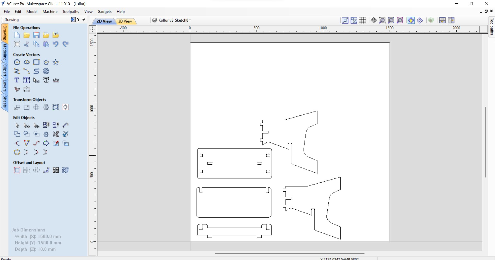
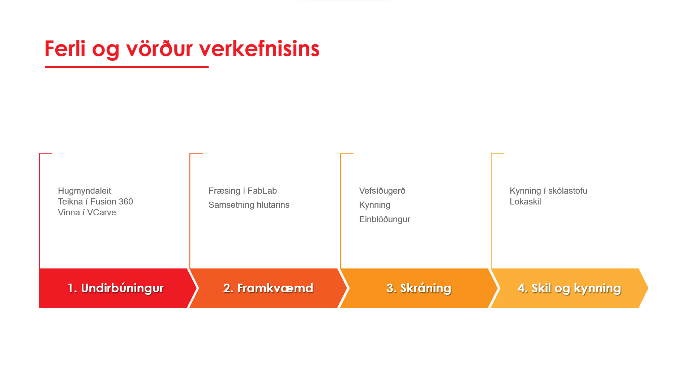
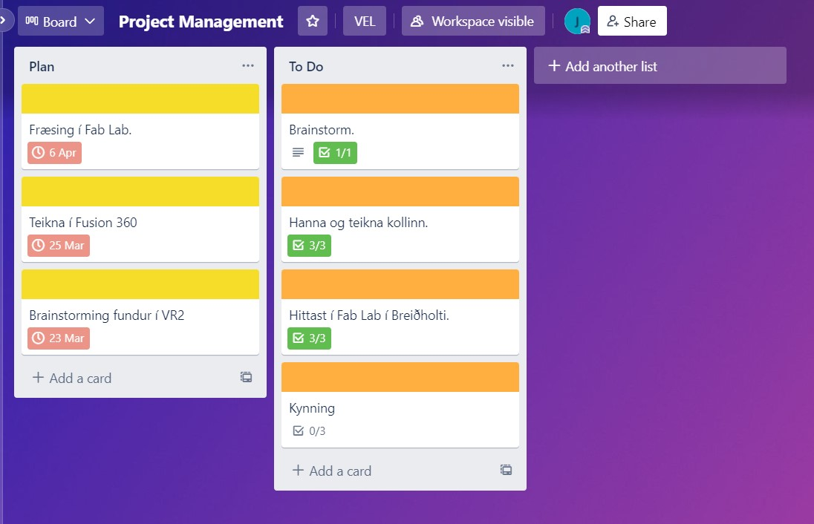
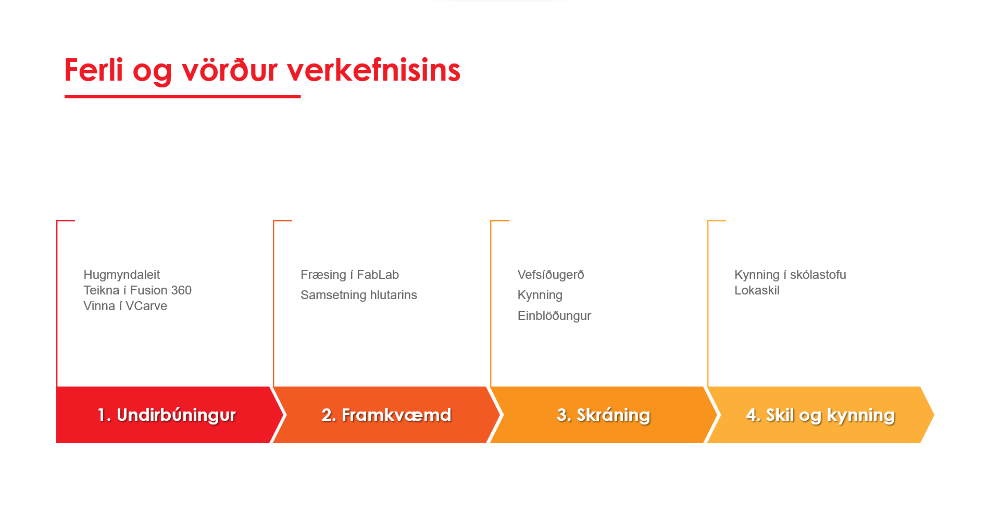
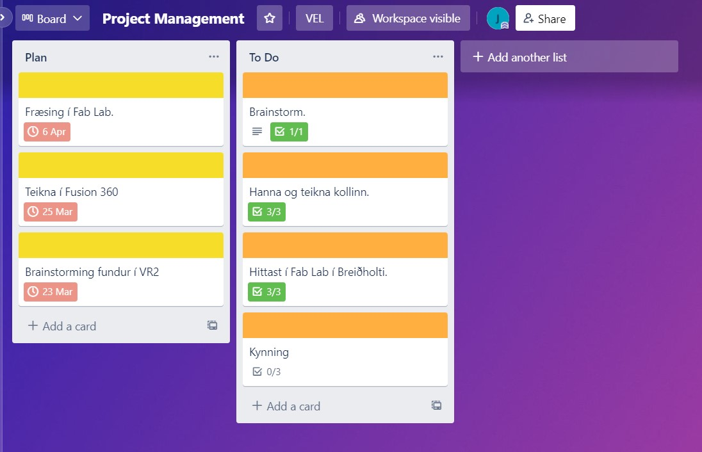

Mitt framlag til lokaverkefnisins
Við Katla skiptum verkefninu niður. Hér má finna hennar vefsíðu. Ég setti prufuútgáfu af forritinu VCarve upp á minni tölvu og sótti MakerspaceID á heimasíðu FabLab Reykjavíkur. Við hjálpuðumst að við að vinna í forritinu. Á myndinni hér fyrir neðan má sjá hvernig hluturinn leit út í VCarve.
Við ákváðum að ég myndi sjá um að skrásetja á sameiginlega vefsvæðið, það er að finna hér.
Einnig bar ég ábyrgð á verkefnastjórnuninni. Ég setti upp Gantt chart í Excel, mynd sem sýnir ferlið og vörður og bjó til minnismiða á vefsíðunni Trello.
 



Ákveðið var að ég myndi sjá um einblöðunginn. Hann er að finna hér að neðan.
Tímaskráning
| Verkefni | Tími |
| Finna hugmynd og skipuleggja | 2 klst. |
| Verkefnastjórnun | 3.5 klst. |
| Vinna í VCarve | 2 klst. |
| Fræsing | 0.5 klst. |
| Einblöðungur | 1 klst. |
| Vefsíðugerð í einstaklingsverkefni | 2 klst. |
| Vefsíðugerð í hópverkefni | 9 klst. |
| Samtals | 20 klst. |